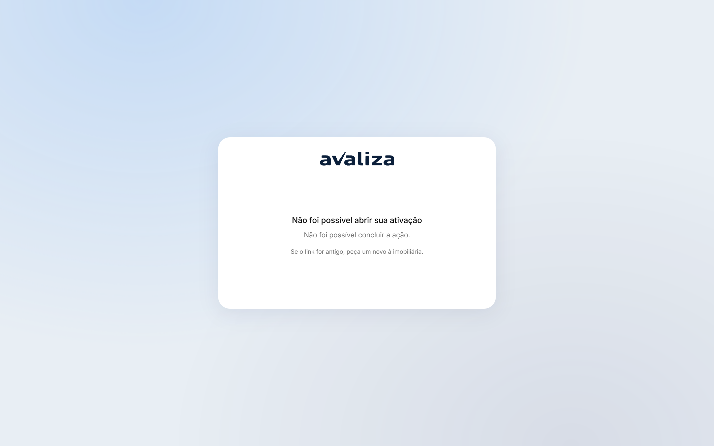
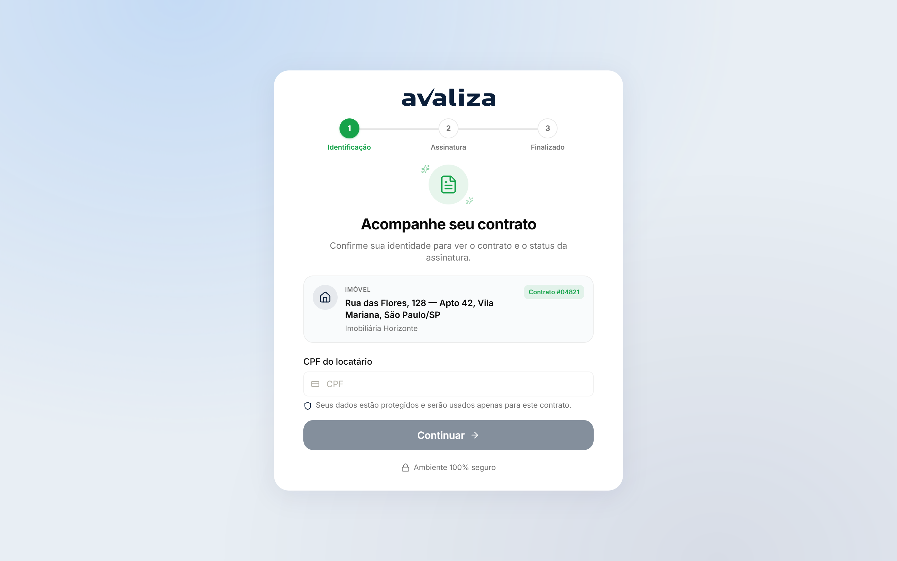
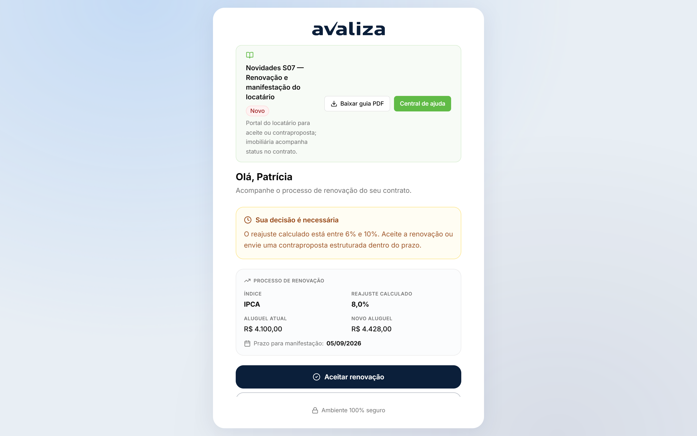
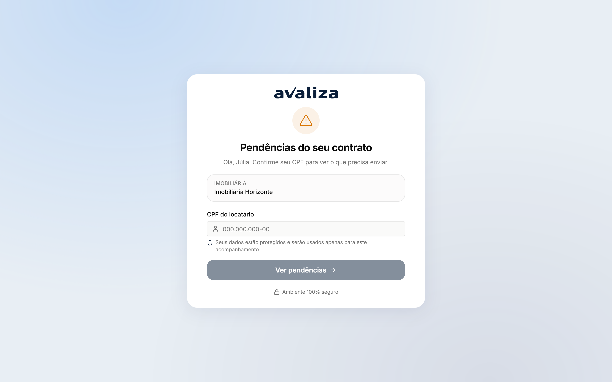

Documento para o responsável · Locatário — sem login no shell
Para: Dono de produto / ops dos portais (sem shell)
Portais do locatário
Quatro tokens, quatro ciclos: ativar, assinar, manifestar renovação, enviar pendência. Nenhum é tela da loja nem da Avaliza.
O que vocês fazem
O trabalho no produto, na ordem em que costuma aparecer no dia. Tela é evidência; não é etapa de um tour.
-
Ativar a garantia
Cadastro, biometria e termos no link /ativacao/{token}. Sem login no shell.
Ativação do locatário ·
/ativacao/demo-nova
/ativacao/demo-nova -
Assinar o contrato
Outro token, ZapSign. Corre em paralelo com a ativação.
Assinar o contrato ·
/contrato/demo-aguardando
/contrato/demo-aguardando -
Manifestar renovação
Aceite, contraproposta ou bloqueio por reanálise. Sem CPF — o link já vincula.
Manifestação de renovação ·
/renovacao/demo-renovacao-manifestacao
/renovacao/demo-renovacao-manifestacao -
Enviar documento pendente
IN pediu evidência. Enviar devolve o caso ao analista; não decide cobertura.
Pendências do locatário ·
/pendencias/demo-pendencias-julia
/pendencias/demo-pendencias-julia
Ciclos que vocês fecham
Jornadas cujo resultado é deste setor. Fronteira, não o passo a passo acima.
vocês entregam Ativação do locatário Cadastro, biometria e termos concluídos — ou travado na fila interna. vocês entregam Assinar o contrato Assinado no ZapSign, expirado ou cancelado. vocês entregam Manifestação de renovação Aceite, contraproposta ou bloqueio por reanálise (>10%). vocês entregam Pendências do locatário Documento enviado — o caso volta para a cobertura, não se encerra aqui.Ciclos em que só aparecem
Participam da operação. Quem fecha o ciclo é outro setor.
Não participam de ciclo alheio. Ou são donos, ou estão fora.
Isto não é de vocês
Confusão típica deste time. O dono está no link.
- Nova proposta — dono: Imobiliária. A proposta já acabou quando o link chega.
- Fila de renovação (loja) — dono: Imobiliária. A fila /renovacoes é da loja. O aceite é outro portal.
- Analisar cobertura — dono: Inadimplência. Enviar documento devolve o caso ao analista de inadimplência; não decide cobertura.
Recebem de
- Recebem Ativação do locatário de Imobiliária (Nova proposta): Aprovado (motor ou banca)
- Recebem Ativação do locatário de Crédito (Banca humanizada): Crédito aprova na banca
- Recebem Assinar o contrato de Imobiliária (Nova proposta): Aprovado — link ZapSign é outro token
- Recebem Assinar o contrato de Crédito (Banca humanizada): Crédito aprova na banca
- Recebem Assinar o contrato de Portais do locatário (Ativação do locatário): Go-live precisa dos dois portais; um não espera o outro
- Recebem Manifestação de renovação de Imobiliária (Fila de renovação (loja)): Link de manifestação vai ao locatário
- Recebem Pendências do locatário de Inadimplência (Analisar cobertura): IN pendencia documento
Passam para
- De Ativação do locatário passam para Portais do locatário (Assinar o contrato): Go-live precisa dos dois portais; um não espera o outro
- De Pendências do locatário passam para Inadimplência (Analisar cobertura): Locatário enviou o que faltava
Capacidades do shell (não são jornadas)
Menu e leitura. Não fecham ciclo — mas são as telas que o time abre no dia a dia além do trabalho acima.
Sem capacidade de shell listada para este destinatário (portais não têm menu).